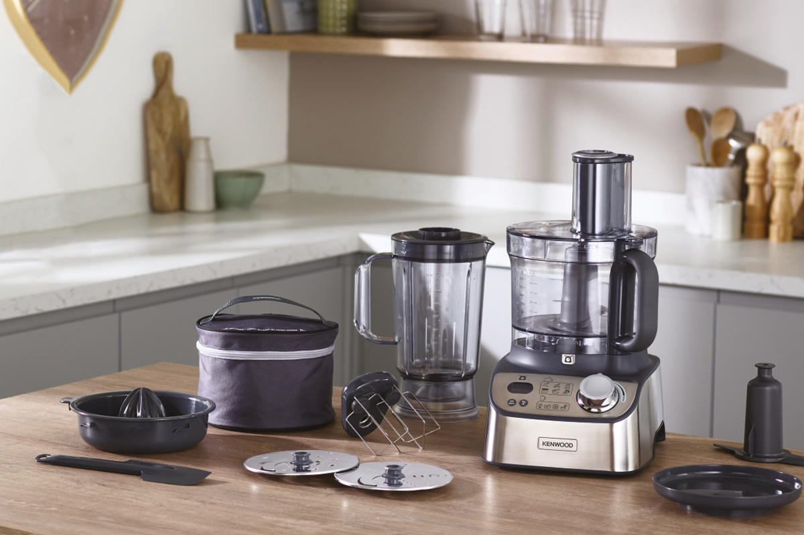
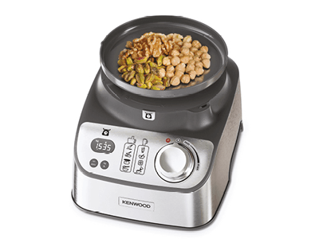
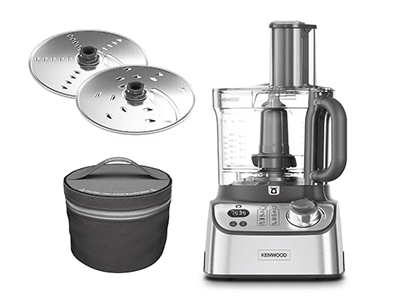
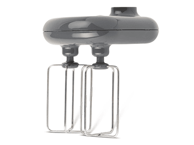
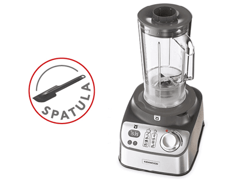
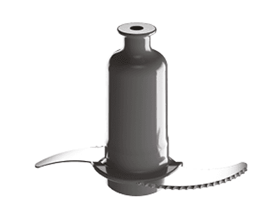
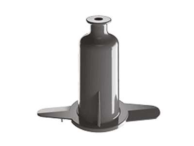
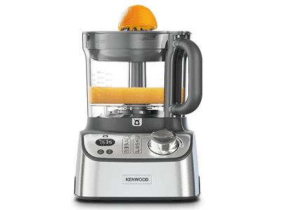
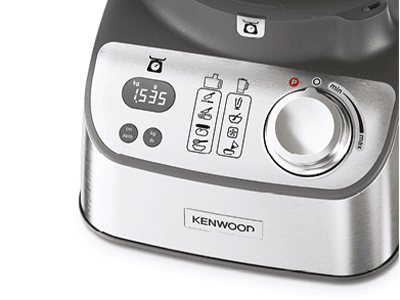

Bırakın İlham Gelsin
Multipro Express Weight
Mutfak Robotu


Entegre Dijital Tartı
Güçlü motoru ve yüksek kaliteli paslanmaz çelik bıçakları ile her çeşit smoothie ve karışımlarınızı daha hızlı hazırlayabilirsiniz.

Dilimleme ve Rendeleme
3 lt kapasiteli mutfak robotunuzda, 2mm ve 4mm rendeleme ve dilimleme disklerinizi rahatlıkla kullanabilirsiniz. Disklerinizi SmartStore™ çantanızda güvenle ve uzun ömürlü saklayabilirsiniz.

Çift Metal Çırpma Teli
Benzersiz ikili metal çırpma telini mükemmel çırpılmış krema, pasta hamuru, beze, cheesecake, mus ve sufleler için kullanabilirsiniz.

Geniş Sürahi Kapasitesi
1,5 lt Smoothie Blender kapasitesi ile Smoothie'ler, çorbalar ve soslarınız saniyeler içinde hazır.

Yeni Mikro Tırtıklı Bıçak
Keskin, güçlü ve dayanıklı tırtıklı bıçaklarla hassas, eşit, doğrama ve püre tarifleriniz bir çırpıda hazır.

Hamur Yoğurma Aparatı
Hamur yoğurma aparatı ile hafif hamurlarınızı rahatlıkla yoğurabilirsiniz.

Narenciye Sıkacağı
Bu kullanışlı aparat sayesinde portakal veya greyfurttan en son damlasına kadar kasenizi doldurabilirsiniz.

Kademeli Hız Ayarı ve Pulse Fonksiyonu
1000 Watt motor gücündeki kademeli hız ayarı ve ani, hızlı parçalama imkanı sağlayan Pulse kademesi sayesinde kontrol sizin elinizde.